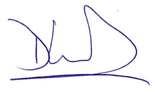

President’s Message
Dave Westwood DFA President 2025-2026
I apologize that it has taken me this long to write to you to provide some perspective and comments about this auspicious time in our history as a union. I think it is fair to say things have been a bit hectic. We are only a few days into the lockout, but already much has happened with plenty more yet to come.
As you probably suspect, I receive a considerable number of messages from Members in addition to ‘external’ supporters, detractors, and genuinely curious individuals who are simply trying to understand what is happening. Many of these messages have helped shape and clarify my view of the situation, strengthening my own convictions in some areas, and forcing me to reconsider some things as well.
I have served as DFA President several times, but this is my first lockout (and strike!) and I am ready and keen to learn and adapt, as we all must. I try to be open and responsive to any and all feedback anyone wants to provide, and I encourage you to share with me what is on your mind.
One of the most important lessons I have learned is to have grace, and not in the sense of smooth and effortless movement. As I understand it, to have grace is to appreciate and recognize that people are trying to do their best at this very difficult, stressful, and confusing time, and one cannot and should not expect perfection, composure, and freedom from mistakes. We all make mistakes, and it would be a further mistake to interpret this as evidence of malice or nefarious intent. We are all learning during this very difficult and stressful time, and I hope that everyone involved in this labour disruption can find the grace to allow ourselves and others the space to express our ideas and emotions with as little judgment as possible.
This is not easy for any of us. After all, we are humans, not chatbots.
What comes next?
Thanks to our strong ‘rejection’ vote, our bargaining team now has a clear and strong mandate to demand that the Board return to the table to negotiate a contract that will bring a conclusion to the labour dispute.
We have formally notified the Board that we are ready and willing to meet them whenever they have a substantially improved offer for us to consider, or if they wish to meet to discuss more creative or innovative solutions to the issues that we have identified as our concerns and priorities. Our conciliation officer Rick Rose remains assigned to our file, and will continue to assist us in reaching a new agreement. Unfortunately, the Board is under no obligation to return to the table in a timely manner. Like you, I would hope that our employer will see the value and indeed necessity of moving quickly to resolve the labour disruption. Every minute that passes threatens the start and success of the Fall semester for our students, and of course for us and our fellow workers at Dalhousie.
We have no interest in a lengthy labour dispute – our goal all along has been to negotiate a contract that we believe DFA Members would find acceptable given the information shared with us during the development of our bargaining proposals. There is no intrinsic value in a long labour disruption. That said, we are very well prepared to support every Member even if the lockout continues for many weeks or even months. Let’s all hope that is not required.
Key updates will be shared regularly as bargaining continues. Things could move quickly, or there could be long periods of waiting. We must keep our spirits and energy strong during this phase as the excitement from the first week of the lockout dissipates and we enter what could be an attritional period where things might turn into a bit of a grinding affair.
I have already been amazed and astonished by the enthusiasm and energy that I’ve seen on our picket lines, and I know that we have a huge amount of creative energy and talent to pour into this job action so I look forward to the clever, funny, creative, and passionate messages on picket signs and flooding social media.
Respecting and valuing diverse opinions and perspectives
We are all the DFA.
While the term ‘President’ might conjure images of a hierarchical structure of command and control – perhaps more so now than ever – I am the DFA President in title only. We have almost 1000 Members and each of us is an equal part of this union. No two of us have exactly the same experiences, personal history, or perspective on all or even any of the issues related to the current labour disruption.
Nobody in our union reports to me, or is required to take direction from me, and nor do I intend or expect that any of you should follow my lead or adopt my views about anything. We are all academics who are perfectly capable of forming our own opinions through gathering and analyzing evidence and information. In addition to our robust analytical skills and abilities, we are also human beings who experience emotions and react in different ways in the face of challenge and adversity.
I say this because there will be times during this labour dispute that you might disagree strongly with opinions or expressions of emotions that you see or hear from one or more colleagues in the DFA.
In addition, the University is a place where we form numerous relationships and bonds with DFA colleagues but also other workers including those who occupy the most senior administrative positions at the University including the President herself. A labour dispute is particularly challenging when you have integrated relationships with the individuals on the other side of the table.
If you disagree with someone’s comments or perspective, I encourage you to engage in a respectful dialogue with that person to share your experience and to learn about their experience which likely differs from your own.
My own self-reflections
As DFA President, I have a responsibility to provide leadership at this time, and with that comes the opportunity or even requirement to speak as “the voice of the DFA” to the extent that this is (a) required, and (b) possible.
My goal is to try to remain focused on moving us toward our ultimate goal, which is to conclude a new collective agreement that is the best one possible for all DFA Members. I am trying to be as open, honest, and transparent as I can, and I am doing my best to be the kind of leader that you can trust and respect. As I mentioned above, I make mistakes, and when I look back at things that I have done or said I am not always pleased or proud of my actions.
I acknowledge and recognize that in some of my remarks to you and in the media, I allowed my own emotions to become a part of my communication, and that I may have unfairly criticized individuals in the senior administration and questioned their underlying motives. I recognize that senior administrators are humans who are also under a lot of stress and pressure and who also make mistakes, and that they have jobs to do just as we do.
That said, let me be perfectly clear with you on one point because it directly relates to some of the strong emotional reactions that I see in our membership, including myself.
We have been locked out of our place of work by President Kim Brooks, and President Kim Brooks alone.
She has the sole authority to initiate this action, and she did not have to do it. While I have no doubt that this choice was informed by consultation with a variety of individuals within the management apparatus, at the end of the day the decision rested with a single individual.
If you attended our inaugural rally, or have read the media coverage surrounding the lockout of DFA Members, you will have learned or been reminded that lockouts in any sector are uncommon, and in higher education they are almost unheard of. Lockouts forever change the relationship between employer and employees.
It is true that a lockout is a legal part of labour relations, in the same way that a strike is, but there is a very important and I would argue critical difference between the two that makes a lockout far more significant.
Unionized employees that legally withdraw their labour during a strike do no direct personal harm to the employer. They are choosing to use one of the very few tools of power at their disposal to negotiate the terms and conditions of their employment. When they initiate a strike, they do so with the recognition that they will surrender their own income for some period of time.
In contrast, employers that legally lock out their employees have chosen to do direct personal harm to those individuals by withholding the income that they depend upon to support themselves and their families.
When President Kim Brooks locked us out, she did so with the knowledge that it would cause direct personal harm to each and every one of us, and it was a conscious and calculated choice to take this action “in the best interests of the institution”. It is entirely possible that anyone acting as President of Dalhousie University might have reached the same conclusion, but the fact is that it was a particular individual that took this action at a particular moment in time, and that person needs to own and be held accountable for that decision.
So, when I see and hear colleagues expressing strong emotions, I understand and recognize where this comes from.
All of this said, I want to be clear that I am not suggesting that personal or ad hominem attacks are appropriate, necessary, or helpful.
Such attacks are not and will not be a part of the DFA bargaining strategy.
We have been attacked, and hurt, but I believe the best way forward at this time is to continue generating pressure on the entire Board of Governors so that they bring an offer to the table that we can accept.
What can we do at this time to reach a satisfactory conclusion?
Now that we are into a labour disruption, I think it is imperative that we all do our best to support and encourage each other. If the dispute lasts a considerable length of time we will all begin to feel many forms of pressure, not the least of which is financial as essential expenses like groceries, rent, mortgage payments, and health needs come due. The strength of a union is the people in it, and we will need to lean on each other as pressure begins to mount. (NOTE: If you need to contact your financial institution to request a temporary relief of payments, click here for a template letter.)
Much of our media exposure to date has been ‘centrally controlled and managed’, and for good reason. We wanted to be sure that traditional media outlets were able to share accurate and timely information with key stakeholders such as students and their families. This helps to create pressure on the Board, as students begin to recognize that significant disruptions are about to occur to their plans for education at Dalhousie. You can help us to amplify this pressure through your own personal channels including social media. The kinds of messages that create maximum pressure on the Board are those that create awareness amongst students and their families that the longer this dispute drags on, the greater the impact on their academic year in terms of when it might start, when it might end, and what amount of content might be lost if the term needs to be cut short because of a protracted labour dispute. When discussing the issues at stake in our collective bargaining, I encourage all DFA Members to speak openly and honestly about your own personal context. The issues that we are fighting for resonate with our fellow workers: catching wages up to high levels of inflation and cost of living, protecting good quality jobs for future generations, helping new workers to cope with the disproportionate impact of the wage/cost-of-living gap, fighting against the precarity of work that has seen an abuse of contract-based employment that allows employers to make employees disposable even though the work that is required is essential and continuing. For many of us, myself included, the fight at this time is for others in the who are facing more difficult circumstances. I have heard loud and clear that those most in need of our collective strength at this time are our early-career colleagues, and our colleagues that are being exploited through continued precarious contracts.
Final remarks
A labour disruption is a time to come together, and it can be a great time to organize and build collective power for the future. There is a unique energy and excitement during a labour disruption, and we get to interact and mingle with our fellow union members in ways that just do not happen at any other time. I encourage everyone to make the most of this rare moment to build solidarity, and to talk about and take note of ways that we can build on our newfound strength after this dispute is resolved. Once we settle into a routine with our picket lines and activities, I would love to see spontaneous events, gatherings, and social activities that help us to forge strong and lasting bonds with each other. There is strength in a union, and that strength is us.
Sincerely,

Dave Westwood DFA President 2025-2026